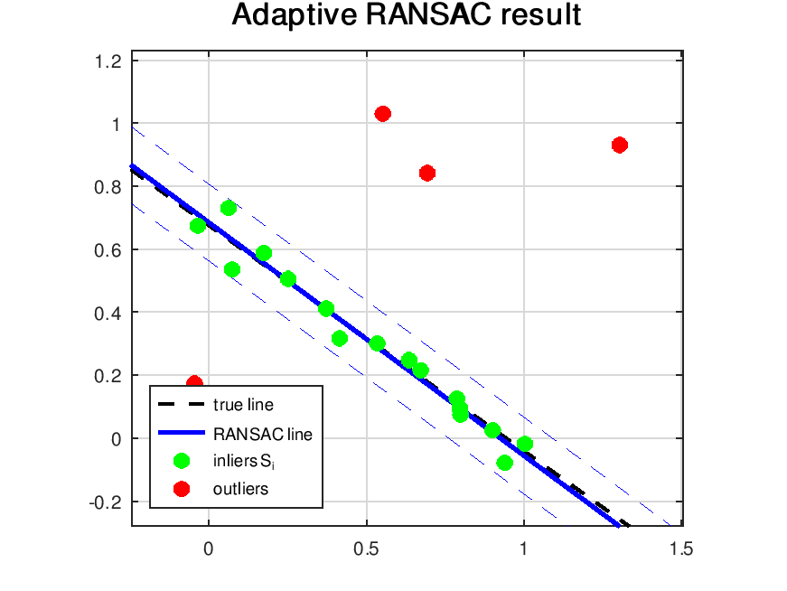
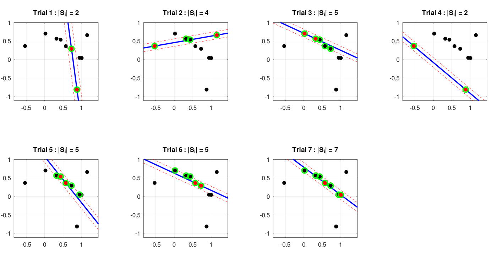
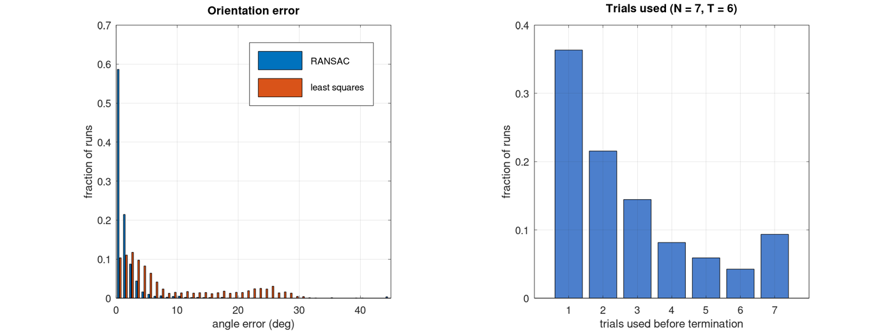
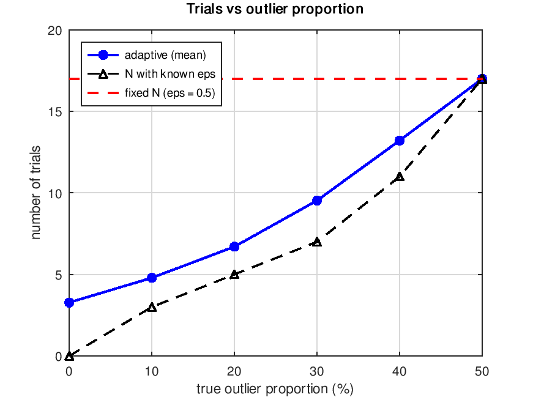

CourseworkSIMULATION
Robust line fitting with RANSAC
Fitting a line when part of the data is wrong. RANSAC built from scratch in Octave, first with hand-set parameters, then with a threshold from noise statistics and a number of trials that adapts to the data, and checked over 1000 Monte Carlo runs.
- Context
- Special Topics on Perception and Robotics (S9)
- Dates
- Oct – Nov 2026
- Work
- Individual
- Tools
- Octave · LaTeX

sample2 random points
→
modelline l = p × q
→
consensuspoints closer than t
→
refittotal least squares on the best set
01Model and inlier test
- A line through two points in homogeneous coordinates is
l = p̃ × q̃ = (a, b, c), so a sample needs s = 2 points. - With
a² + b² = 1, the distance from a point to the line is simply|ax + by + c|. - The final line is a total least-squares fit: it passes through the centroid, and its normal is the singular vector of the centred points with the smallest singular value.
02Part I: fixed parameters
10 points, 3 of them outliers. With an inlier ratio w = 0.7, the number of samples needed for a 99% chance of drawing at least one clean pair is:
N = log(1 − p) / log(1 − wˢ) = log 0.01 / log 0.51 = 6.84 → 7

03Part II: parameters from the data
- Threshold from noise statistics. For Gaussian noise σ,
d²/σ²follows a χ² law with one degree of freedom (a line has codimension 1). Accepting 95% of inliers givest² = 3.84 σ², sot = 1.96σ = 0.098for σ = 0.05. - Adaptive number of trials. Start from the worst case ε = 0.5 (N = 17). Each time a larger consensus set is found, update
ε = 1 − |Sᵢ|/mand recompute N. ε can only decrease, so N never grows back. - Refit and re-check. After the TLS refit, the consensus set is recomputed with the refined line, which recovers inliers that the 2-point model missed.
| test set: 20 points, 20% outliers | value |
|---|---|
| trials used | 5 (instead of 17) |
| inliers found | 16 / 16, no outlier kept |
| angle error, RANSAC | 0.89° |
| angle error, least squares on all points | 3.98° |
04Monte Carlo check
1000 runs, with a new line, new noise and new outliers each time:
| quantity | result |
|---|---|
| true inliers within t of the true line | 94.9% (theory 95%) |
| final consensus set outlier-free | 100% |
| mean trials | 6.84 (fixed N = 17) |
| mean angle error, final line | 1.76° |
